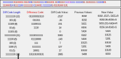
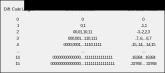

The decoding and decompressing processes for the .CR2 format are a bit convoluted due to the way they data is actaully stored in the bytes. Up until now we were mostly at a byte level and only had to look up the bytes to get necessary pieces of data but for decoding we have to go into the bit level because every bit is used to save on space. Another way in which space saving is achieved in .CR2 is that the actual values aren't saved but the differences between a value and the previous value of the same component (example R looks for last R value, not last G value), which in most cases will be a lot smaller than the actual values. Those differences aren't just saved in binary but instead use a smaller difference code format, which needs to be transformed into the proper difference values.
Unfortunately only using difference codes would result in bits that couldn't properly be evaluated. In order to solve that problem there is a difference code length before every difference code. The difference code lengths are also codes as they are the codes found in the Huffman Tables saved in DHT, which means that they can always be correctly identified and assigned their proper values from the Huffman Table. Once a difference code length (n) has been evaluated the next n bits are the difference code which also needs to evaluated. That process of finding the Huffman encoded difference code length and its difference code, in which attention needs to be paid that the proper Huffman tables are used for the components, is then repeated until we get to the end of the bits. Here is an example as to how this could look like for a RAW file and its sequence of bits:

The way difference codes are defined can be seen here:
